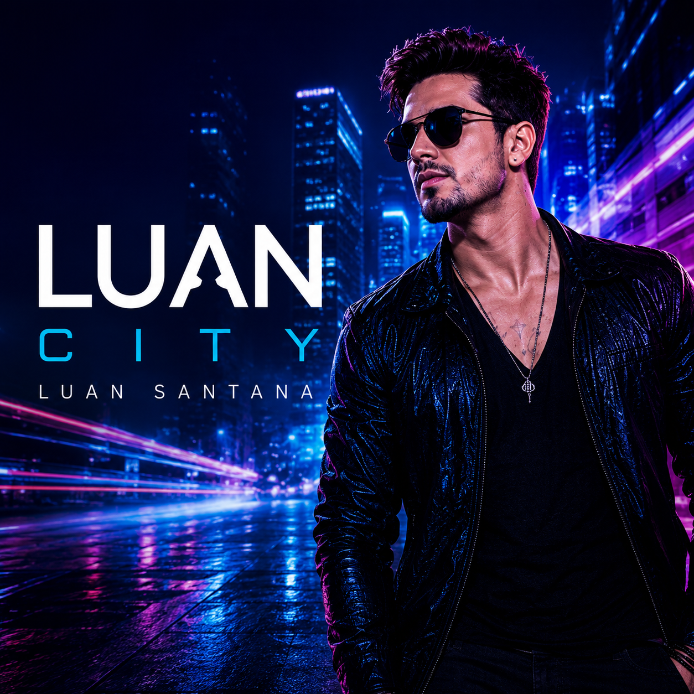

2009
Ao Vivo
Primeiro DVD da carreira e responsável por apresentar Luan Santana para todo o Brasil.
Ouvir no YouTube
2011
Quando Chega a Noite
Álbum que consolidou a carreira do cantor com diversos sucessos.
Ouvir no YouTube